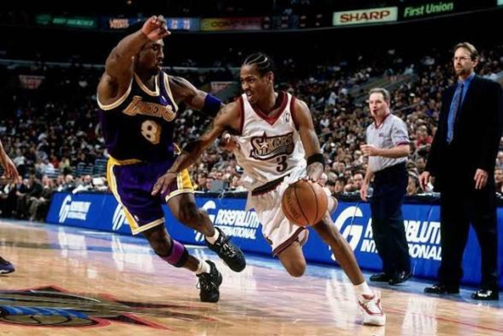
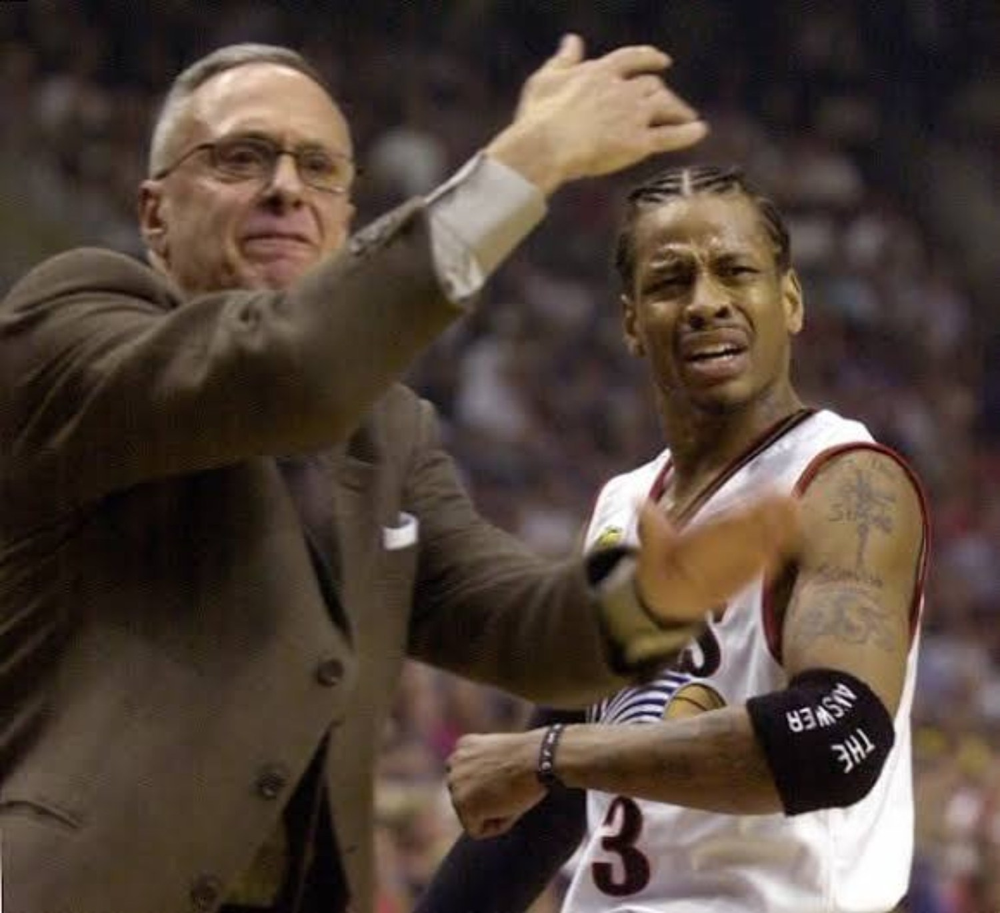
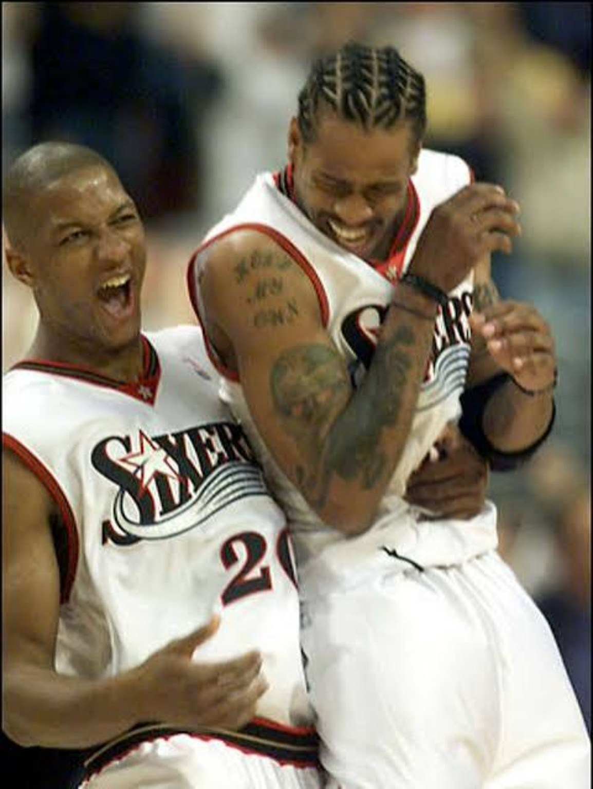
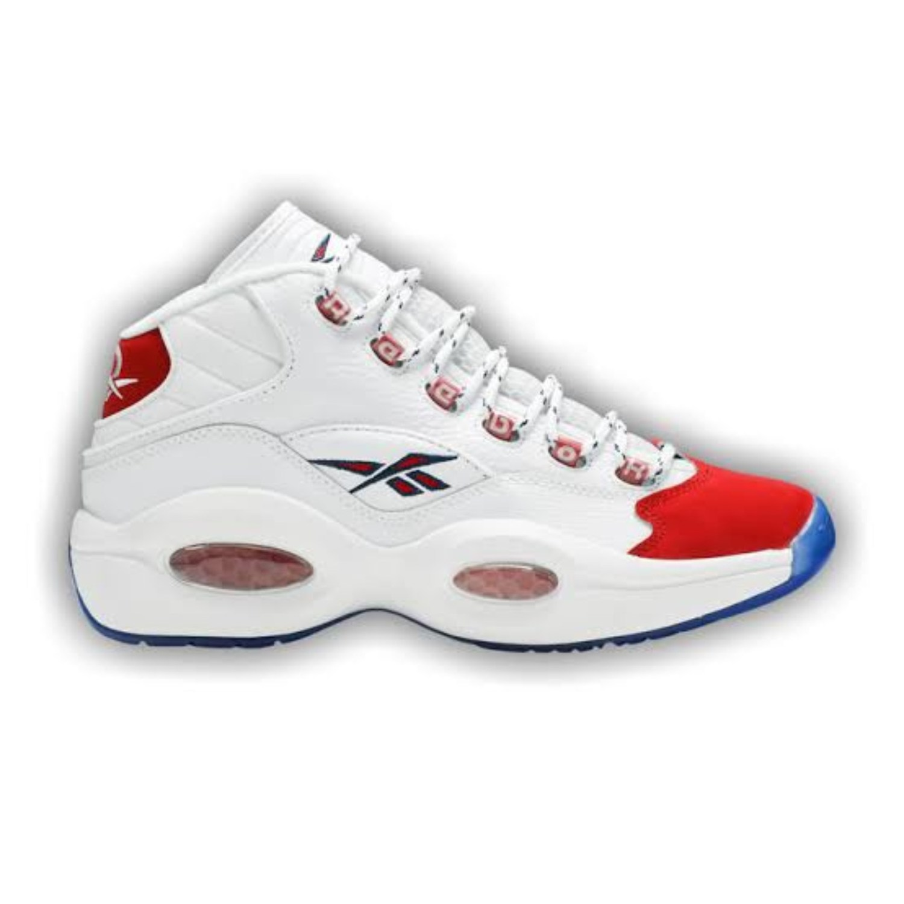
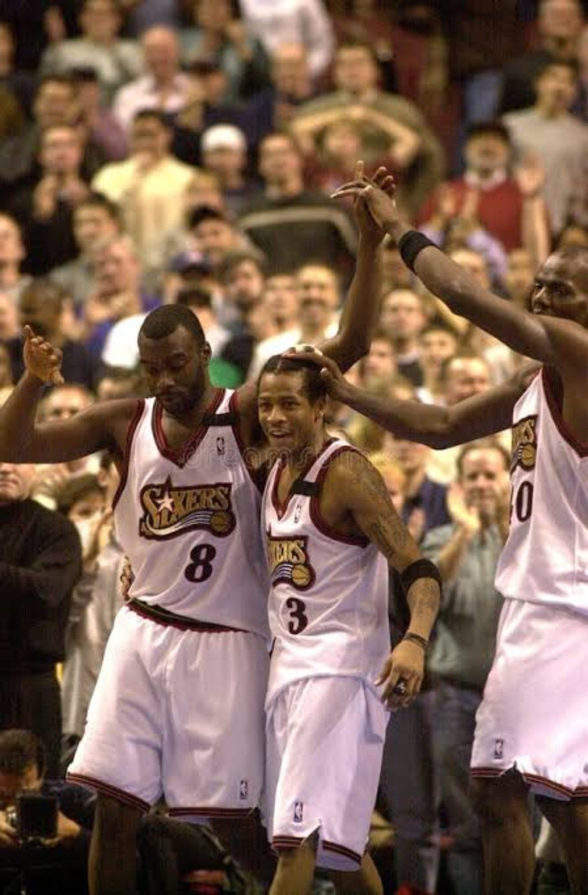
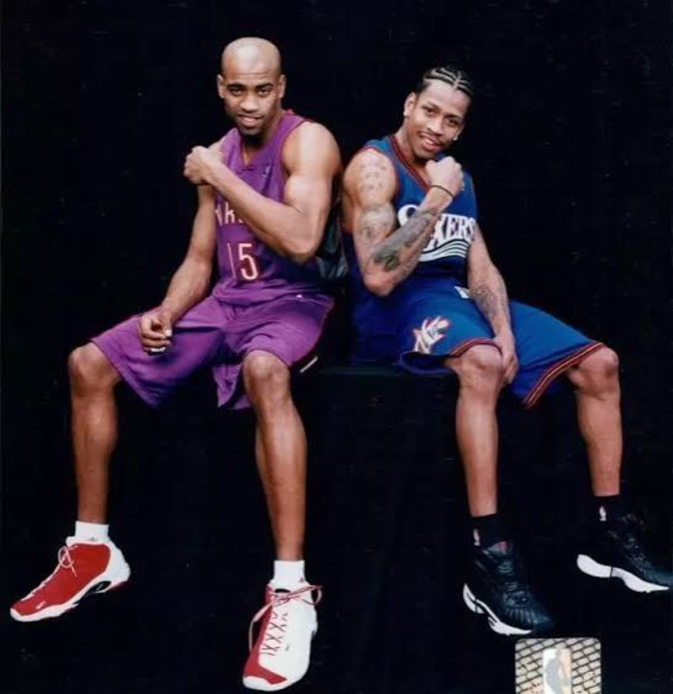

The rookie year proved Philadelphia had chosen the right player. The next three seasons were about figuring out what to do with him. Allen Iverson was already a star. What the Sixers did not have yet was the structure, role definition or playoff experience that could turn the electricity into winning basketball.
01. EVERYTHING CHANGED AROUND HIM.
Larry Brown arrived in 1997 and almost everything around Iverson started changing at once. The Sixers replaced the old red, white and blue look with the black, red and gold identity that would define the next era. Jerry Stackhouse was moved before Christmas. Jim Jackson passed through. Tim Thomas arrived as a 20-year-old lottery talent. Aaron McKie and Theo Ratliff came back in the Stackhouse deal. Eric Snow arrived from Seattle a month later.
This was not a clean rebuild with every piece planned years in advance. It was a franchise experimenting in real time around a 22-year-old star.

Even the aesthetics told the story. New uniforms. Braids fully part of the look. A signature-shoe line becoming tied to the player as much as the franchise jersey was. Philadelphia looked different because the entire project was becoming different.
02. BROWN AND IVERSON WERE NEVER GOING TO FIT IMMEDIATELY.
Brown represented an older basketball language: structure, defined roles, discipline, execution. Iverson was 22, already carrying years of public scrutiny, already embraced by hip-hop culture and already playing the game with an identity that did not resemble the traditional superstar template.

Maybe Brown was too old-school at first. Maybe Iverson was too young and too culturally different for what Brown was used to. Maybe neither one was ready for the other. The easy version of the story says the coach needed to fix the star. The better version is that both had to move toward each other.
Brown initially wanted more traditional point-guard behavior from a player whose natural game was always closer to a two-guard in a one's body. Iverson could pass. Rookie year already proved that. But asking him to organize every possession while also carrying the scoring burden was not the cleanest use of what made him special.
03. STACKHOUSE OUT. FIT IN.
The December 1997 Stackhouse trade was the first major signal that Philadelphia was moving away from simply collecting young scorers. Stackhouse and Eric Montross went to Detroit. The Sixers got Aaron McKie and Theo Ratliff, plus a future first-round pick.
McKie could handle the ball, defend, make the extra pass and score without needing the offense built around him. Ratliff was a young defensive-minded center whose timeline fit Iverson's. Those were different kinds of players than another high-usage scorer. They were jobs around the franchise star.

Jim Jackson represented one version of the rebuild: add another proven bucket next to Iverson and Stackhouse. The idea made sense. Jackson had been a big-time scorer in Dallas and looked like a potential third option. But by the 1998 trade deadline, both Jackson and Stackhouse were gone.
Then came the move that helped clarify the offense for years.
04. ERIC SNOW DIDN'T TAKE THE BALL AWAY. HE FREED IVERSON.
Philadelphia acquired Eric Snow from Seattle in January 1998. It looked like a minor transaction. It became one of the most important role-definition moves of the early Iverson era.
Snow could bring the ball up, start the set and defend the tougher perimeter assignment. McKie could play beside either guard and keep the offense connected. Ratliff gave the defense a rim protector. Suddenly Iverson did not have to perform every job on the possession.
That mattered on defense too. Snow taking difficult guard assignments allowed Iverson more freedom to roam, jump passing lanes and use the instincts that would later help him lead the league in steals multiple times.
05. 1997–98 WASN'T REGRESSION. IT WAS RECONSTRUCTION.
Iverson's scoring dipped from 23.5 to 22.0 points per game in Year 2. The easy label would be sophomore slump. The season itself says something more interesting.
He shot 46.1 percent from the field — the best field-goal percentage of his career. The roster was being turned over, Brown was installing structure, roles were being changed and Iverson was being asked to learn a different way of operating.
The raw scoring dipped. The game was being reorganized.
The Sixers improved from 22 wins to 31. Not a playoff team yet. Not finished. But no longer standing still.
06. TIM THOMAS WAS SUPPOSED TO BE PART OF THE FUTURE.
Philadelphia drafted Keith Van Horn second in 1997, then sent him to New Jersey in the larger deal that brought back Jim Jackson, Eric Montross, Anthony Parker and Tim Thomas. Thomas was only 20, 6-foot-10, athletic, skilled and could already stretch the floor.
He averaged 11.0 points as a rookie and shot 36.3 percent from three. The appeal was obvious. A young forward with size, touch and athleticism looked like exactly the kind of upside swing that could grow next to Iverson.
The talent was real. The long-term Philly fit never fully materialized. By March 1999, Thomas was moved to Milwaukee in the deal that brought back Tyrone Hill. In hindsight, Thomas became one of the clearest examples of tantalizing talent whose ceiling always felt higher than the final production.
07. THE QUESTION. THE ANSWER. THE LOOK OF A NEW ERA.
The cultural transition was happening alongside the basketball transition. The Question had already become inseparable from rookie Iverson. The Answer line pushed the signature identity even further. Pair that with the new Sixers colors, the braids and the growing connection to hip-hop, and the franchise star no longer looked like a player borrowing somebody else's image.

The Questions and the Answers were not side notes. They were part of the package. The shoes, the new uniforms and the player all felt like they belonged to the same changing moment.
08. 1999 WAS THE BREAKTHROUGH EVERYBODY FORGETS.
The lockout shortened the season to 50 games and erased the All-Star Game. That alone makes 1999 easy to lose in the memory of the era. Even the scoring title looks unusual on paper because 26.8 points per game is modest compared with many scoring champions before and after it.
But this was the year Iverson became a winning star.
Philadelphia had gone 53–111 across Iverson's first two seasons. Then came 28–22, a first-round win over Orlando and the franchise's first playoff series victory of the Iverson era. The scoring title established elite individual production. The playoff win proved the structure could produce something beyond highlights.
Indiana swept Philadelphia in the second round, but the loss had context. The Pacers were deeper, more experienced and more comfortable in playoff basketball. Orlando showed how far the Sixers had come. Indiana showed what they still lacked.
09. 1999 PROVED IT COULD WORK. 2000 PROVED IT WASN'T A FLUKE.
Iverson followed the lockout breakthrough with 28.4 points per game, his first All-Star selection and Second Team All-NBA honors. Philadelphia won 49 games, returned to the second round and finished with a top-four defense by defensive rating.

Ratliff was coming into his own as a defensive presence. Snow was the steady point guard. McKie was the do-everything bench piece who could take pressure off Iverson when they shared the floor. Tyrone Hill and Matt Geiger gave the team veteran size and toughness.
Then Philadelphia added Toni Kukoč from Chicago at the trade deadline, giving Brown another ball-handler, passer and experienced championship piece. The move cost Larry Hughes, but it added a different kind of versatility to a team trying to get older without abandoning the core.

Philadelphia still was not a finished Finals team. The core was young: Iverson was 24, Snow 26, McKie 27, Ratliff 26. Compared with veteran contenders, the Sixers were still short on deep-playoff experience.
That showed against Indiana again. Philly fell behind 3–0 in the second round, then fought back to win Games 4 and 5 before losing in six to a Pacers team that would reach the NBA Finals. A year earlier, Indiana swept them. The gap was still there in 2000. It just was not as wide anymore.
10. THE STAR WAS STILL ROUGH AROUND THE EDGES.
Growth did not mean Iverson suddenly became polished. He still clashed with Brown. He was still maturing. He was still a player whose cultural identity could make traditional basketball power structures uncomfortable. The deeper connection to hip-hop was not fading as the wins increased. It was becoming more visible.
That is important because the winning did not come from sanding every edge off Iverson. It came from learning which edges were part of the problem and which ones were part of what made him special.
By 2000, Iverson had learned how to buy into Brown's system without becoming a traditional point guard. He had learned how dangerous he could be off the ball. He had learned how to trust role players to handle responsibilities he had carried himself as a rookie. Most importantly, he had learned what winning NBA basketball asked from a franchise star.
11. FROM FLASHY YOUNG STAR TO ELITE.
This three-year stretch is easy to skip because 2001 towers over everything that came right after it. But 2001 does not make sense without 1998, 1999 and 2000.
1998 was reconstruction. New coach. New look. New teammates. New role.
1999 was breakthrough. Scoring title. First Team All-NBA. First playoff appearance. First playoff series win.
2000 was confirmation. First All-Star Game. 49 wins. Another second round. A tougher fight against Indiana.
BY 2000, ALLEN IVERSON WAS IN TRANSITION FROM FLASHY YOUNG STAR TO ELITE.
The Sixers were no longer rebuilding. They just were not finished.
SOURCES / RECORD
Basketball-Reference — Allen Iverson • 1997–98 Sixers transactions • Tim Thomas • 1998–99 Sixers • NBA — All-NBA history • 1999–00 Sixers • 1999–00 Sixers transactions
004 • THE MVP SEASON.
2000–01: the best start in the league, the MVP case, Brown's structure, McKie's Sixth Man year and the Mutombo move that pushed Philadelphia over the top.
BACK TO THE ANSWER FILES →